사람들은 왜 음악을 틀어 둘까요
강의는 "음악을 언제 듣느냐"는 질문으로 시작해요. 채팅으로 올라온 답은 설거지할 때, 운동할 때, 출퇴근길, 일할 때처럼 대부분 비슷했어요. 강사는 여기서 음악의 성격을 짚어요. 음악은 집중해서 보는 콘텐츠가 아니라 무언가를 하는 동안 곁에 틀어 두는 것이에요. 잠들기, 일하기, 이동하기 같은 행동이 있는 한 음악 수요는 끊기지 않는다는 거예요.
슬라이드의 검색창이 그걸 보여 줘요. 왼쪽에 '일할때'를 치면 '일할때 듣기 좋은 노래 광고없는'이, 오른쪽에 '수면 플'을 치면 '수면 플리 가사없는', '수면 플레이리스트 광고없음'이 자동완성으로 떠요. 사람들이 행동에 맞춰 음악을 찾는다는 증거예요.
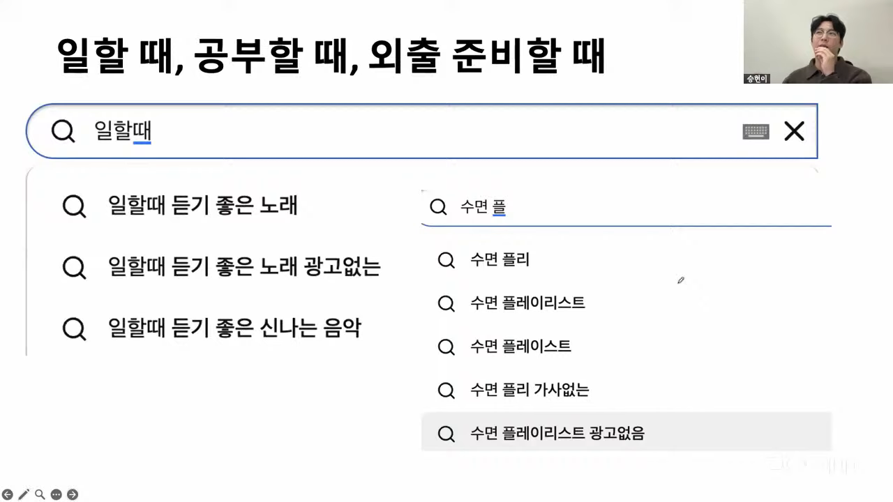
플레이리스트 하나가 버는 돈
강사는 조회수 526만 회짜리 플레이리스트 영상을 보여 주며 수익을 맞혀 보라고 해요. 채팅은 500만~1천만 원 정도를 예상했지만, 슬라이드는 '음원 1회 조회당 5원'으로 잡아 2,630만 원이라고 계산해요. 음악 영상은 길어서 광고를 많이 넣을 수 있기 때문이라고 설명해요. 이 단가는 강사의 추정이에요.
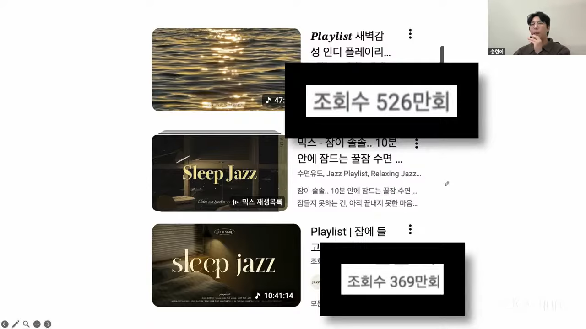
이런 플레이리스트를 이제는 사람이 아니라 AI가 만든다는 게 다음 슬라이드예요. 화면에는 Suno 로고와 '이름은 수노!'라는 문구가 있어요. 강사는 여러 AI 음악 서비스 중 Suno가 먼저 공식 라이선스를 받았고 품질도 가장 좋다고 봐요. 악보를 못 읽어도, 편집을 못 해도 된다고 해요. 강사 자신도 십몇 년 음악을 했지만 악보를 볼 줄 모른다고 말해요.
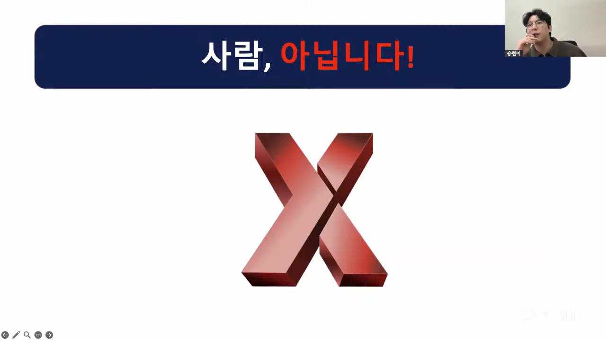
왜 하필 음악일까요
강사가 꼽는 음악의 장점은 두 가지예요. 왼쪽 카드의 '무한 반복 소비'는 영상과 비교한 거예요. 한 번 본 영상은 질려서 다시 안 보지만, 음악은 플레이리스트에 저장해 두고 하루 종일 들어요. 10년 전 노래도 지금 들어요. 오른쪽 카드의 '자산의 복리 효과'는 곡이 늘어날수록 누적 청취 시간이 늘어 정산금도 계속 커진다는 뜻이에요.
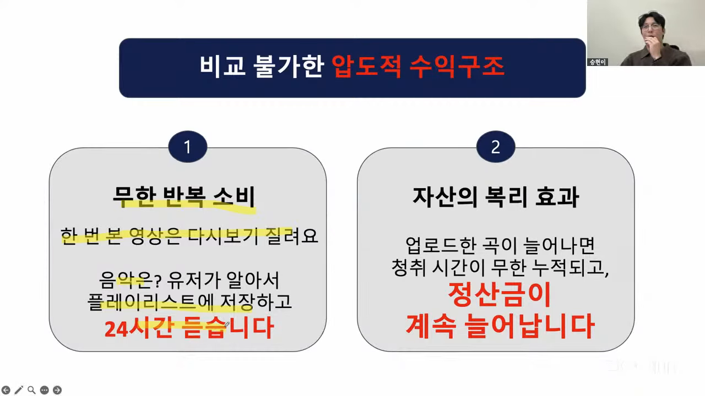
여기에 수익이 달러로 들어온다는 점을 더해요. 그리고 "지금 들어가도 늦지 않았냐"는 질문에는 오히려 지금이 기회라고 답해요. 슬라이드에는 스포티파이가 스트리밍 조작 의혹이 있는 AI 음원 수만 곡을 퇴출했다는 기사, AI 음악 차단을 위해 새 메타데이터와 스팸 필터를 도입했다는 기사가 붙어 있어요. 강사는 정책을 어기며 찍어 내던 계정이 사라졌으니 정직하게 하는 사람에게는 호재라고 봐요.
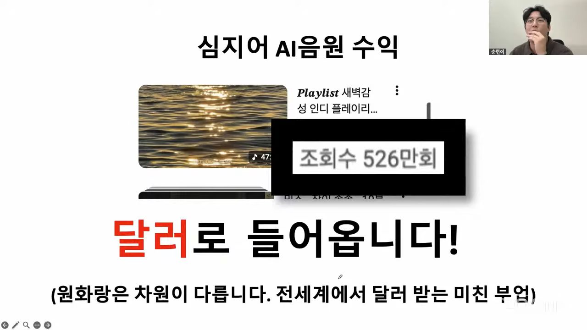
용어 세 개와 정책이 바뀐 흐름
본론에 앞서 강사는 강의 내내 나올 용어 세 개를 먼저 정리해요. 슬라이드의 세 카드가 그거예요.
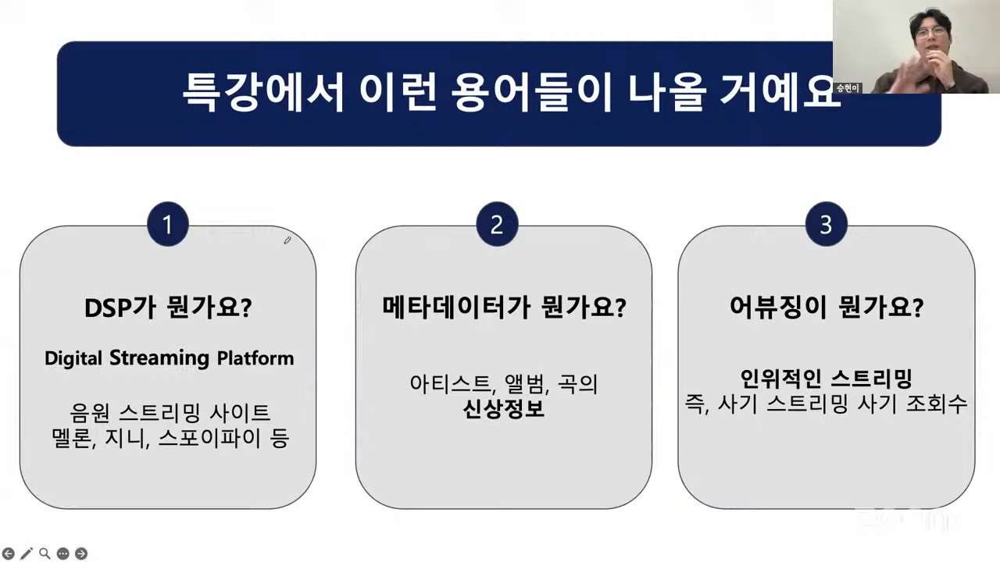
- DSP(Digital Streaming Platform)는 멜론, 지니, 스포티파이, 애플 뮤직 같은 음원 스트리밍 사이트예요.
- 메타데이터는 곡의 신상 정보예요. 아티스트가 어느 나라 사람인지, 앨범 장르와 하위 장르가 뭔지, 작사가·작곡가가 누구인지, 가사가 뭔지가 다 여기 들어가요.
- 어뷰징은 인위적으로 만든 가짜 스트리밍이에요. 2010년대 음원 사재기가 대표적이고, 지금은 유튜브 조회수와 시청 시간도 살 수 있게 됐다고 해요.
2023년부터 2026년까지
강사는 정책이 왜 중요한지를 연도별 흐름으로 설명해요. 슬라이드는 네 칸이에요. 2023년은 진입 장벽도 규제도 없던 'AI 음원 무지성 수익기'였어요. 유튜브에 'AI로 만들었다'고 콧바람 소리만 올려도 돈을 줬다고 표현해요. 2024년에는 돈이 된다는 게 알려지면서 AI 음원이 폭증하고 시장이 포화돼요. 빨간 화살표가 가리키는 2025년에 스포티파이와 유튜브가 칼을 빼 들어 대량 삭제, 계정 정지, 수익 창출 제한을 시작해요. 2026년은 공식 라이선스 시대로, 구조와 정책을 알아야 수익이 나는 시장이라고 정리해요.
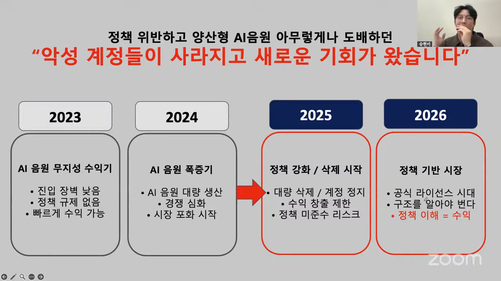
그래서 정책을 확인하지 않으면 어떻게 되는지도 짚어요. 왼쪽 네 칸은 알고리즘 노출 0, 수익 창출 정지, 정책의 변화, 채널 삭제예요. 오른쪽 결론은 '오늘의 수익이 내일 0원이 될 수 있다'는 거예요. 강사는 이걸 교칙을 모르고 학교에 다니는 학생에 비유해요.
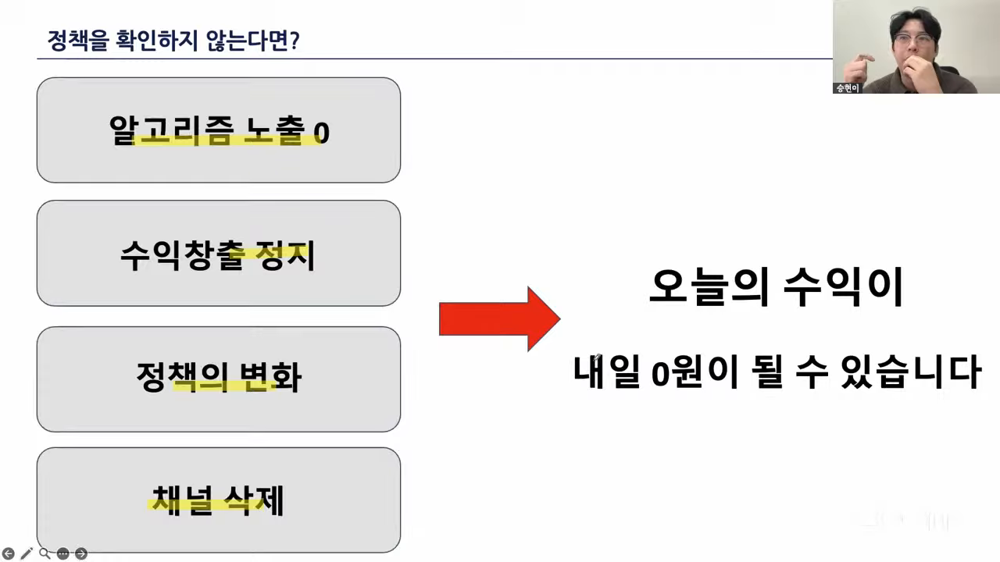
강사는 음악 시장이 레드오션이 된 적은 한 번도 없다고 덧붙여요. 새 걸그룹이 나와도 기존 걸그룹이 계속 벌듯, 이미 팬덤이 있는 AI 플리 채널도 계속 번다는 거예요. 그 근거로 자신도 2025년에 늦게 시작했지만 수익을 냈다고 말해요.
플랫폼별 AI 음원 정책
이 구간은 플랫폼마다 AI 음원에 무엇이 바뀌었는지를 한 장씩 넘기며 설명해요. 슬라이드 글씨가 작아서 먼저 표로 옮겼어요. 표는 영상 슬라이드와 강사 설명 그대로예요.
| 플랫폼 | 슬라이드에 적힌 변화 | 강사의 해석 |
|---|---|---|
| 스포티파이 | 가상 AI 아티스트에 'AI 페르소나' 배지, 그 아티스트는 추천·에디토리얼 플리에서 제외, 사람 아티스트 인증 'Verified by Spotify', 의심 프로필 신고·이의제기, 메이저 음반사와 공식 AI 리믹스 준비 | 배지는 팔로워 50만~100만 명급에나 붙어요. 초보는 걱정할 필요 없어요 |
| 애플 뮤직 | 인위적 스트리밍 20억여 회 적발, 곡을 지우는 대신 로열티 압수와 기존 로열티 전액 반환, 알림 없는 삭제, 모델 업데이트 때 자동 재검사 | 어뷰징 한 번이면 그동안 번 돈까지 토해 내요 |
| 유튜브 | 수익 창출 기준이 롱폼 4,000시간 → 8,000시간, 쇼츠 90일 1,000만 회 → 2,000만 회, AI 슬롭 배제, 양산형 플리 채널 퇴출로 조회수당 최대 12원 | 영상은 길수록 광고가 많이 붙어 단가가 올라가요 |
| 틱톡·인스타그램 | 동의 없는 AI 목소리·딥페이크 즉시 제재, 시청 지속 시간·완주율 중심 추천, AI 생성물 라벨 의무 | 라벨을 안 달면 수익 창출이 막혀요 |
| 디저 | 6개월간 재생 0회인 AI 곡 삭제, AI 곡은 추천·큐레이션에서 100% 제외, 월 1,000회·고유 청취자 500명 넘는 아티스트에 가중치 2배, AI 곡 스트리밍의 85%가 가짜로 확인, 탐지 기술을 다른 회사에 판매 | 가장 무서운 플랫폼이에요. 한국에서는 서비스하지 않아요 |
| 타이달 | AI 음악 스트리밍에 로열티를 주지 않겠다고 선언 | 한국에서는 서비스하지 않아요 |
| Suno | Pro 요금제 월 20곡, 상위 요금제 월 60곡까지만 다운로드, Studio 기능을 쓰면 무제한 | 찍어 내기를 막으려는 조치로 봐요 |
스포티파이: 배지와 인증
스포티파이 슬라이드의 맨 위 항목이 'AI 페르소나' 배지예요. 실제 사람이 없는 가상 AI 아티스트 계정이 대상이고, 붙으면 검색·플레이리스트 옆에 배지가 뜨고 추천 알고리즘에서 빠져요. 세 번째 항목은 반대로 진짜 사람임을 인증하는 'Verified by Spotify'예요. SNS(Social Networking Service) 활동, 콘서트 티켓 판매, 굿즈 같은 활동을 종합해서 본다고 적혀 있어요. 강사는 자신이 연 매출 8억 원을 낼 때도 배지가 붙은 적이 없다며, 차트 1위급이 아니면 신경 쓸 필요가 없다고 해요.
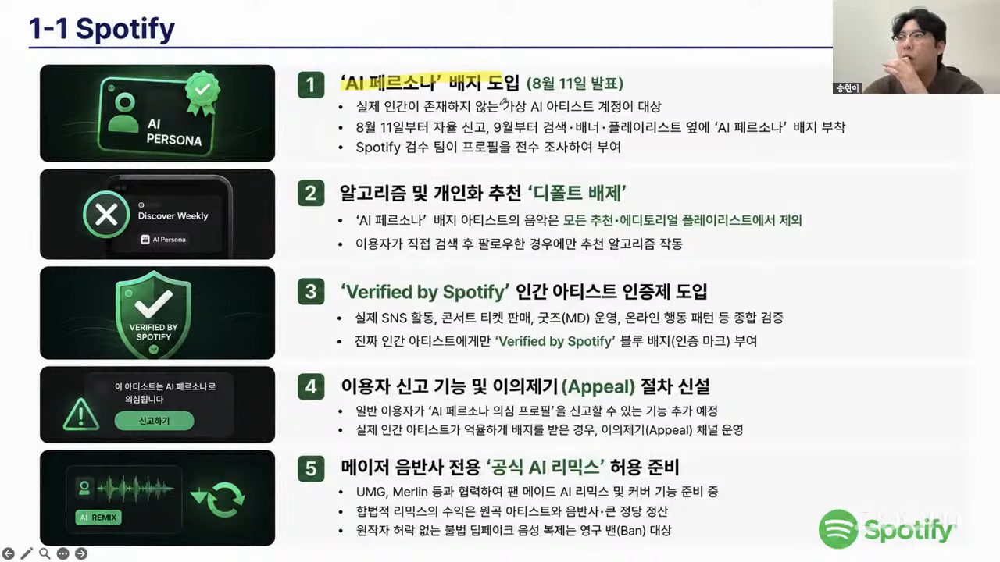
유튜브: 문턱이 두 배로
유튜브 슬라이드의 1번이 수익 창출 기준 변경이에요. 롱폼은 4,000시간에서 8,000시간으로, 쇼츠는 90일 1,000만 회에서 2,000만 회로 두 배가 돼요. 강사는 쇼츠가 특히 힘들다고 설명해요. 롱폼은 1년 안에 시간을 채우면 되지만 쇼츠는 90일 안에 채워야 하고, 정산할 돈이 쌓여 있어도 기준을 못 넘기면 지급을 보류하기 때문이에요. 3번 항목은 양산형 채널이 빠지면서 RPM(Revenue Per Mille)이 올라 조회수당 최대 12원까지 나온다는 내용이에요. 강사가 여러 채널을 직접 뜯어 본 숫자라고 해요. 앞에서 5원, 여기서 12원으로 다른 건 영상 길이에 따라 붙는 광고 수가 달라서예요.
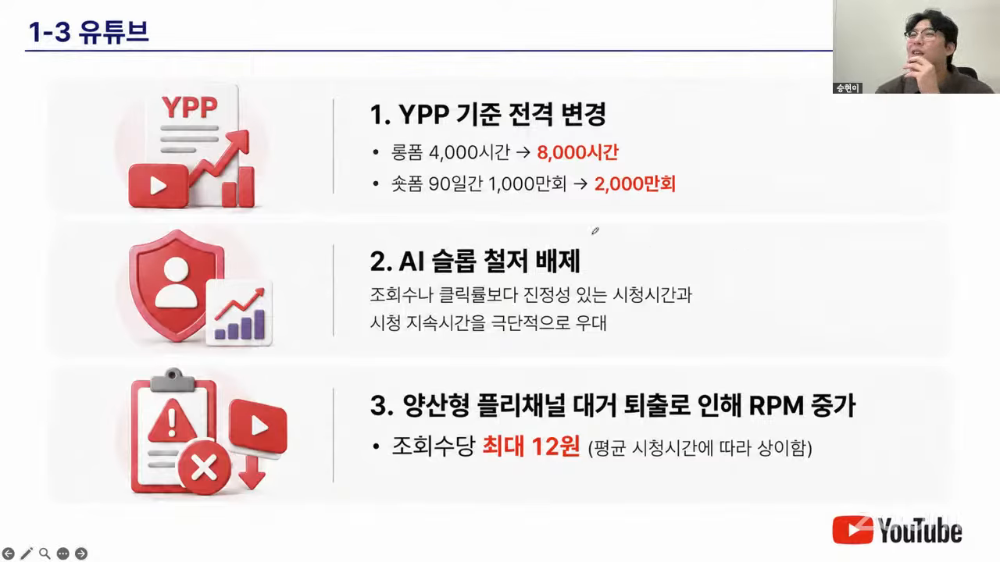
디저: 재생 없는 AI 곡은 삭제
강사가 '가장 위험하다'고 한 곳이 디저예요. 1번 항목은 최근 6개월 동안 재생이 한 번도 없는 AI 곡을 플랫폼에서 지운다는 내용이에요. 2번은 AI로 판정된 곡을 추천 피드와 공식 플레이리스트에서 영구히 빼서 검색으로만 들을 수 있게 한다는 거예요. 5번에는 특허 출원 중인 탐지 기술의 오탐률이 0.01% 미만이고, 유럽 저작권 단체가 이 기술을 들여왔다고 적혀 있어요. 디저는 한국 인터넷 주소에서는 서비스가 안 돼서 내가 직접 들어 줄 수도 없다고 덧붙여요.
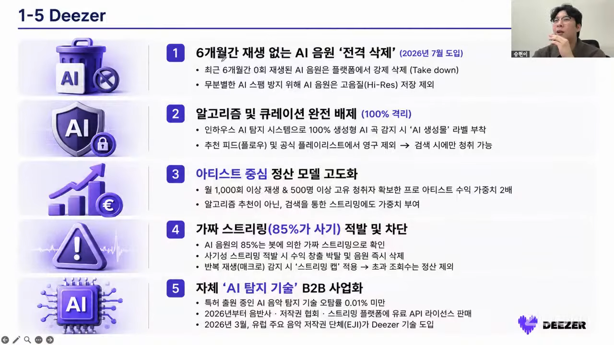
Suno: 다운로드 제한
마지막 슬라이드는 곡을 만드는 Suno 쪽 변화예요. 1번에 Pro 요금제는 월 20곡, '프리미엄' 요금제는 월 60곡까지만 내려받을 수 있고, 괄호 안에 Studio 기능을 쓰면 무제한이라고 적혀 있어요. 2번과 3번은 그 결과 필요한 곡 수를 확보하기 어려워져 양산형 플레이리스트는 만들기 힘들어진다는 내용이에요. 강사는 원래 상위 요금제를 써서 타격이 없었다며, 시작한다면 상위 요금제를 권해요.
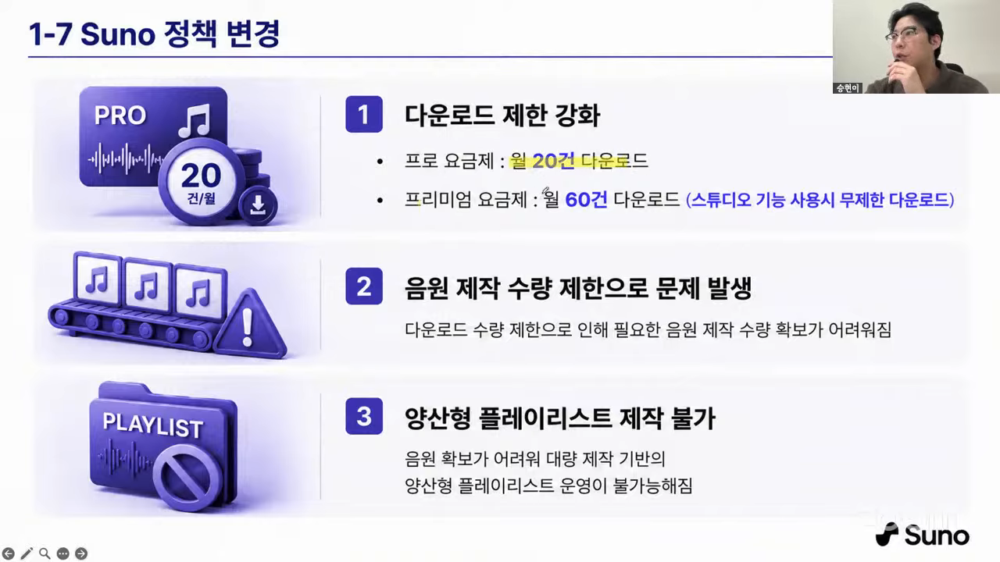
스트리밍당 로열티는 애플 뮤직이 가장 높고, 그다음이 유튜브, 스포티파이 순이라고 정리하며 이 구간을 마쳐요. 애플 뮤직 이야기 중에는 AI 곡을 봇으로 재생시켜 큰돈을 벌었다가 미국 연방 수사기관에 잡혀간 사람의 사례도 꺼내요. 강사 기억에 기댄 이야기라 지역과 금액은 정확하지 않을 수 있어요. 요점은 어뷰징이 단순한 규정 위반이 아니라 범죄라는 거예요.
음원과 계정이 삭제되는 이유
강사는 자기 곡도 수천 곡 삭제당했다고 털어놔요. 화가 나서 지워진 곡의 제목, 형식, 앨범, 아티스트, 길이, 재킷을 전부 뜯어 비교해 봤더니 공통점이 보였다고 해요. 그 결과를 곡 단위와 계정 단위로 나눠 보여 줘요.
삭제당하는 음원
첫 슬라이드는 음원 쪽 네 가지예요. 빨간 글씨 항목을 하나씩 풀면 이래요.
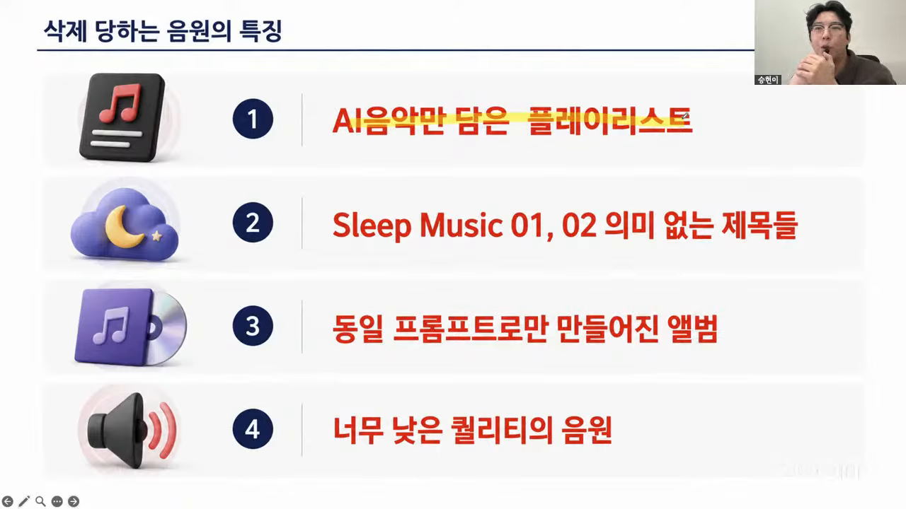
- 내 AI 곡만 담은 플리를 내가 돌리기. 곡을 내도 아무도 안 들으니 직접 들으려는 건데, 어뷰징으로 처리될 확률이 높아요.
- 'Sleep Music 01, 02', 'Gym 1, Gym 2' 같은 제목. 제목 짓기가 귀찮아 번호만 붙이면 안 돼요.
- 같은 프롬프트로 찍어 낸 앨범. 강사는 음원 파일을 직접 열어 보니 그 안에 프롬프트, Suno, AI 같은 정보가 다 적혀 있었다고 해요. 앨범 곡의 데이터가 전부 같으면 티가 나니 프롬프트를 곡마다 달리해야 해요.
- 듣지도 않고 낸 저품질 곡. 한 번에 열 곡을 뽑아 그대로 내면 노이즈가 꼈는지, 가사가 씹혔는지, 뒷부분이 이상한지 아무도 몰라요.
삭제당하는 계정
두 번째 슬라이드는 계정 쪽 세 가지예요. 강사는 1번 발매 간격이 가장 크다고 해요.
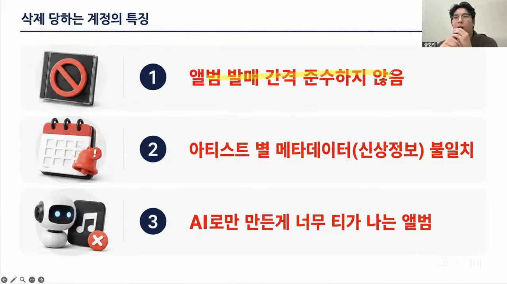
- 발매 간격을 안 지키기. 매일 앨범을 낼 수 있는 아티스트는 지구상에 없어요. 일주일에 한 장, 많아야 두 장은 봐줄 수 있지만 하루 열 곡씩 내면 누가 봐도 양산이에요.
- 아티스트별 메타데이터 불일치. 한국인 아티스트가 어제는 팝, 오늘은 K팝, 내일은 J팝, 그다음엔 브라질 펑크를 내면 이상해 보여요. 여러 장르를 하고 싶으면 아티스트를 여러 개 만들면 돼요.
- AI로만 만든 티가 나는 앨범. 재킷에 AI 서비스 로고가 그대로 붙어 있거나, AI 특유의 소리를 손보지 않고 내는 경우예요.
강사는 이것만 지키면 삭제는 당하지 않는다고 정리해요. 뒤 Q&A에서 발매 간격을 다시 물었을 때는 같은 아티스트라면 적어도 3~4일에 한 장, 2일에 한 장도 안 된다고 답해요.
돈이 들어오는 구조
삭제를 피하는 법 다음은 돈을 버는 법이에요. 강사는 전체 흐름을 한 장에 담은 슬라이드로 시작해요. 왼쪽부터 ① 프롬프트 기획, ② AI로 음악 제작, ③ 음원 편집·마스터링, ④ 유통 플랫폼 등록, ⑤ 프로모션과 마케팅, ⑥ 수익화 순서예요. 강사는 ①이 사실상 채널과 아티스트 기획이라고 짚어요. 재즈 채널인지 K팝 채널인지 먼저 정하고, 거기에 맞춰 곡을 만들라는 거예요.
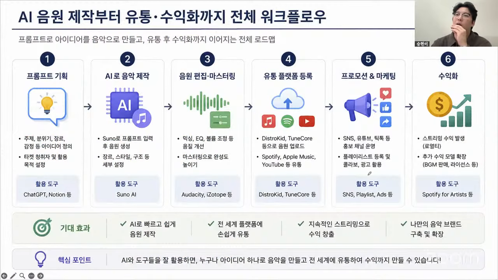
프로모션도 어렵게 생각할 필요 없다고 해요. 플레이리스트를 만들고 유튜브에 올리면 누군가 듣고, 들으면 돈이 들어온다는 거예요. 인스타그램이나 틱톡은 시간이 많이 들어서 굳이 권하지 않아요. 하루 한두 시간만 쓰고 싶은 사람에게 맞는 방식이라는 이유예요.
한 번 올리면 모든 사이트로
유통사에 곡을 등록하면 정해진 날짜에 알아서 여러 음원 사이트로 나가요. 슬라이드의 로고 격자 맨 윗줄이 스포티파이, 애플 뮤직, 유튜브 뮤직, 유튜브이고, 그 아래로 디저, 아마존 뮤직, 코부즈, 비트포트, 붐플레이 같은 해외 사이트가 이어져요. 붐플레이는 아프리카 음원 사이트예요. 국내 사이트는 멜론과 지니는 안 되고 플로만 나온다고 해요.
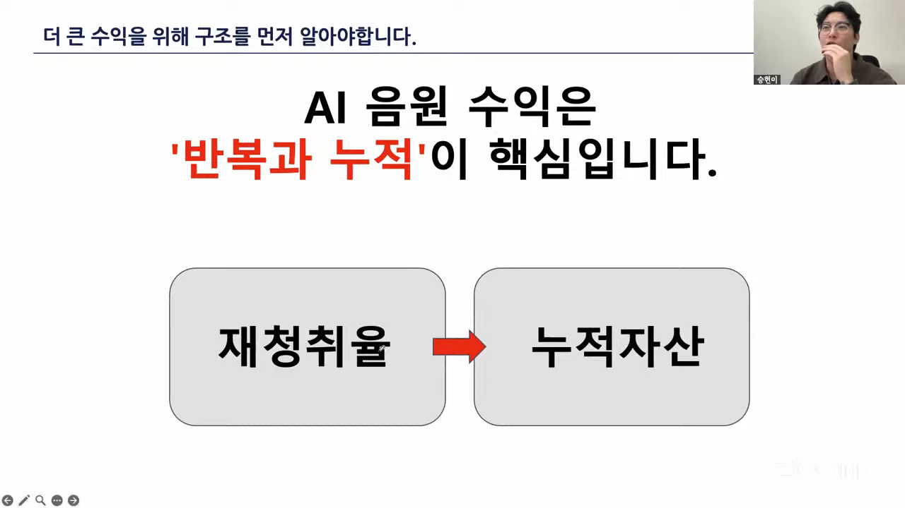
유튜브 부업은 유튜브 한 곳에서만 돈을 번다는 게 약점이라고 강사는 말해요. 그래서 같은 곡으로 네 군데에서 수익을 가져가요. 슬라이드의 순서대로 유튜브 뮤직 스트리밍, 스포티파이 스트리밍, 유튜브 플레이리스트 협찬, 유튜브 플레이리스트 조회수예요.
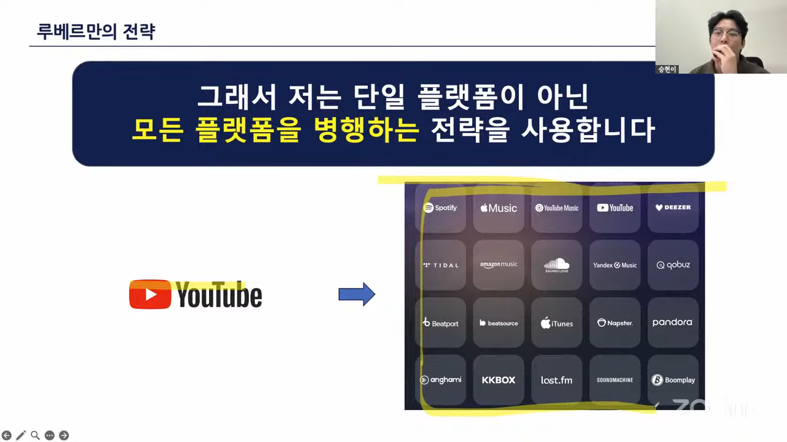
협찬 수익은 이런 거예요. 기성곡을 올리는 유명 플리 채널에 유통사나 기획사가 연락해서 "영상에 우리 노래 하나 넣어 주면 얼마 줄게"라고 제안해요. 강사는 이런 제안이 들어올 만큼 채널이 크면 광고를 골라 받는 단계가 된다고 해요. 아래 그림은 한 곡이 어느 길로 돈이 되는지 강의에서 말한 숫자로 다시 그린 거예요.
강사가 보여 준 정산 화면
강사는 자신이 쓴 유통사가 Ditto Music, Landr, Amuse, Horus Music, DistroKid 다섯 곳이고, Ditto 계정만 다섯 개였다고 해요. 계정 하나에 아티스트를 40명 정도까지만 등록할 수 있는데 아티스트가 200명이 넘었기 때문이에요. 슬라이드는 그중 일부 정산 화면이에요. 왼쪽은 12월 Landr 계정 두 개의 잔액 2,527.84달러와 1,637.11달러로 합계 6,026,305원, 오른쪽은 1월 Ditto 계정 하나의 주별 정산으로 2,738,250원이에요. 화면의 금액은 세금을 떼기 전, 환전 수수료만 뺀 금액이라고 해요.
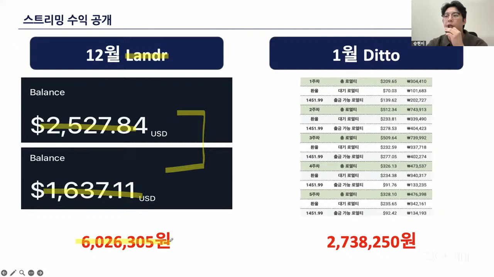
왜 내 곡은 돈이 안 될까요
곡을 내 봤는데 수익이 안 나는 사람은 이 구조를 모른다고 해요. 슬라이드는 여섯 칸이 두 줄로 이어져요. 윗줄 노출 → 청취 → 반응, 아랫줄 추천 강화 → 노출 강화 → 반복 재생이에요. 새로 나온 곡은 어느 사이트든 일단 노출해 줘요. 누군가 듣고 좋아요를 누르거나, 끝까지 듣거나, 자기 플리에 담으면 그게 '반응'이에요. 반응이 생기면 추천이 강화되고 더 많은 사람에게 보여져요.
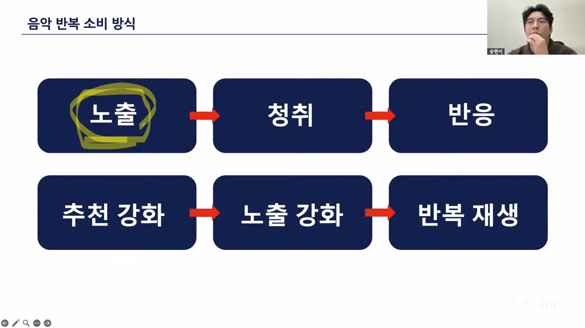
유튜브는 수익 창출 채널이어야 하고 광고가 재생돼야 돈이 되지만, 음원 사이트는 다르다고 강사는 강조해요. 구독자 수와 상관없이 30초만 들으면 돈을 주고, 1스트리밍에 약 6원이라고 해요. 강사의 방식은 그다음 단계에서 반응을 직접 만드는 거예요. 곡을 내서 노출이 되면, 자기 플레이리스트를 만들어 곡을 넣어요. 플랫폼은 플리에 담긴 걸 반응으로 보고 노출을 늘리고, 그러면 다른 큐레이터도 "요즘 자꾸 뜨네" 하고 자기 플리에 넣어요.
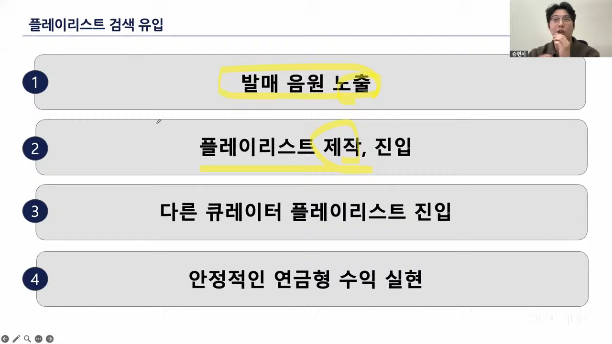
앞 섹션에서 '내 AI 곡만 담은 플리를 내가 돌리면 어뷰징'이라고 했어요. 여기서 말하는 건 플리를 만들어 공개해 두는 것이지, 혼자 반복 재생하는 게 아니에요.
플레이리스트 채널은 왜 안 될까요
강사에게 가장 많이 오는 질문은 "로파이 플레이리스트 채널이 잘된다는데 어떻게 해야 잘되냐"예요. 첫 번째 답은 썸네일이에요. 슬라이드 오른쪽처럼 애니메이션풍 일러스트를 쓰면 사람들이 보자마자 로파이라고 알아보고 눌러요. 왼쪽에는 그 이유로 감성적인 색감, 음악과 몰입의 순간, 일러스트 기반의 아트 스타일이 적혀 있어요. 사람들이 이 그림체를 이미 로파이와 짝지어 학습했다는 거예요.
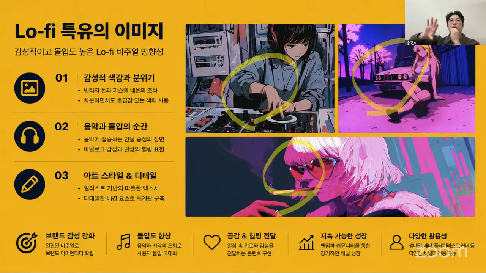
그 그림체가 싫으면 다른 길도 있어요. 다음 슬라이드의 채널은 아이스 라테, 아이스 우롱티, 탄산수처럼 음료 사진 하나만 가운데 두고 배경색만 바꿔요. 영상마다 조회수가 84만~125만 회예요. 강사는 이렇게 색감과 분위기를 통일하면 채널 정체성이 생긴다고 해요. 다만 참고만 하고 그대로 따라 하지는 말라고 못 박아요. 그 채널 주인이 공들여 만든 브랜딩이고, 따라 하면 상대에게 피해가 가는 데다 내 채널은 양산형으로 보일 수 있어서예요.
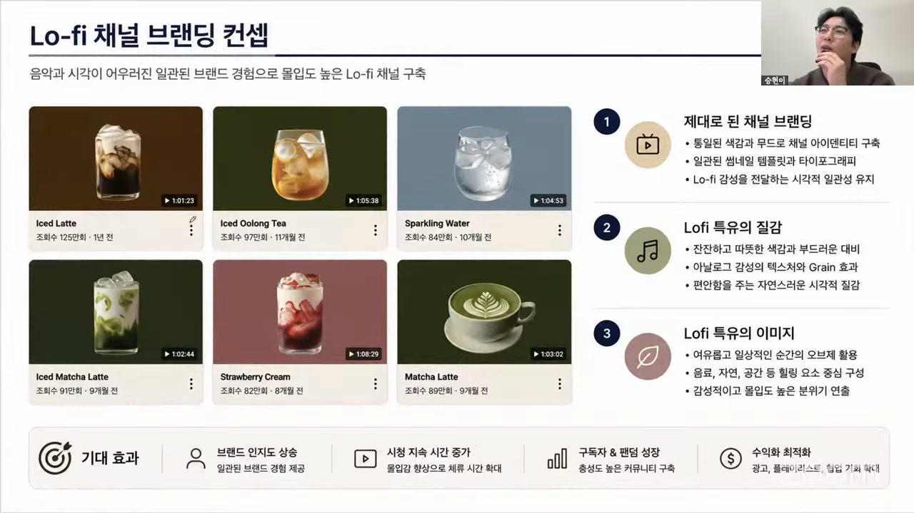
내 채널이 안 되는 네 가지 이유
그다음 슬라이드는 플레이리스트 채널이 실패하는 이유 네 가지예요.
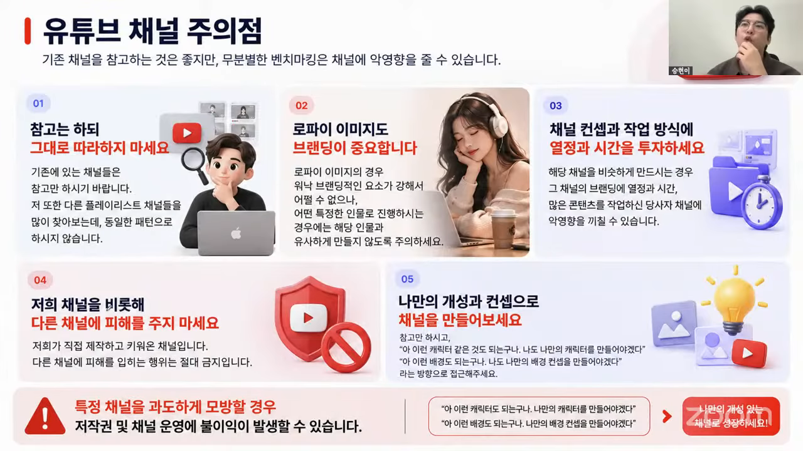
- 곡 하나에 시간을 너무 써요. Suno는 웬만하면 잘 나오니 노이즈나 갑자기 분위기가 바뀌는 후반부 같은 오류만 잡으면 돼요. 내 취향에 맞추느라 하나 만들 때 남들은 열 개, 스무 개를 만들어요.
- 썸네일 소재가 계속 바뀌어요. 화장품으로 시작했다가 조회수가 안 나오면 면봉, 그다음엔 컵으로 바꿔요. 하나로 끝까지 밀고 가지 않아요.
- 상황과 감성 표현이 부정확해요. 썸네일은 면봉인데 제목은 '드라이브할 때 듣기 좋은 플리'인 식이에요. 강사라면 화장품 썸네일에 '올리브영 매장에서 나올 것 같은 플리'처럼 제목을 맞춘다고 해요.
- 올렸다 말았다 하다가 금방 포기해요. 월요일에 출근했다가 마음대로 쉬고 3주 뒤에 나오는 신입에게 월급을 주지 않듯, 유튜브도 그런 채널에 알고리즘을 주지 않는다고 비유해요.
해법은 관점을 바꾸는 거예요. 슬라이드의 세 항목처럼 청취자·시청자 입장에서 한번 생각해 보고, 내가 하나 만들 때 남들은 열 개 만든다는 걸 기억하고, 내 채널이어도 듣고 보는 건 다른 사람이라는 걸 잊지 말라고 해요. 강사는 여기에 "내가 유튜브라면 지금 이 채널에 알고리즘을 줄까?"를 덧붙여요.
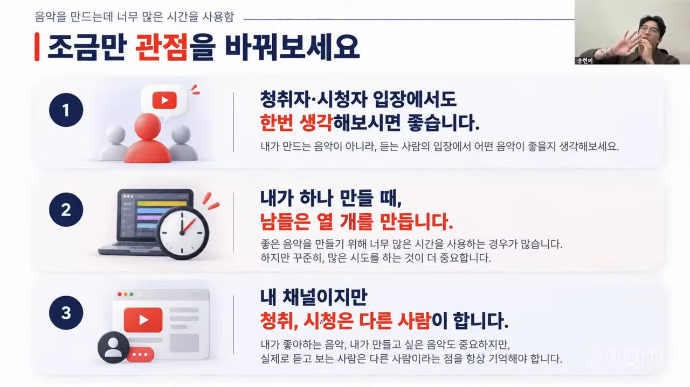
썸네일 만드는 세 가지 규칙
썸네일 꿀팁도 슬라이드 한 장에 담겨 있어요. ① 하나의 주제 안에서 변화를 줘요. 위쪽 'Cafe Jazz' 썸네일들은 같은 인물과 카페라는 주제 안에서 시간대와 창밖 풍경만 바꿔요. ② 음식, 사진, 공간, 배경, 피사체 같은 시각 요소에 집중해요. 같은 피사체도 화면 어디에 두느냐에 따라 달라 보이니 시선이 거기 모이게 하라는 거예요. ③ 노래의 내용을 정확히 표현해요. 'Cozy Piano' 썸네일 옆에 분위기(잔잔함·편안함), 상황(공부·작업·휴식), 타깃을 전달하라는 메모가 붙어 있어요.
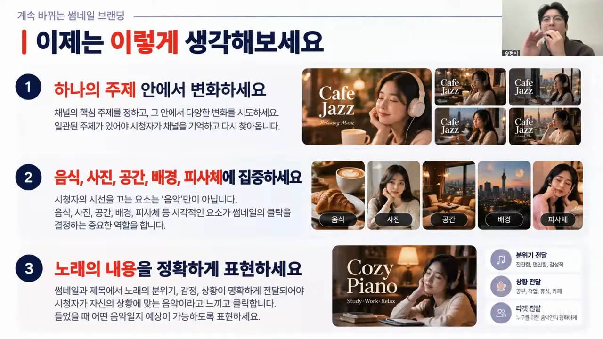
마지막 슬라이드는 꾸준함 이야기예요. 대리운전이나 배달 같은 부업은 오늘 일하면 내일 돈이 들어오는 100m 달리기지만, 이건 42.195km 마라톤이라고 해요. 슬라이드 3번에는 미스터비스트도 500~600번째 영상에서야 주목받기 시작했다고 적혀 있어요. 4번은 업로드 주기를 정하고 맞추라는 거예요. 화요일과 금요일로 정했으면 그 요일에, 매번 같은 시간대에 올리면 돼요. 강사는 일주일에 두세 번은 지킬 수 있지만 네 번은 어렵다며, 지속할 수 있는 주기를 고르라고 해요.
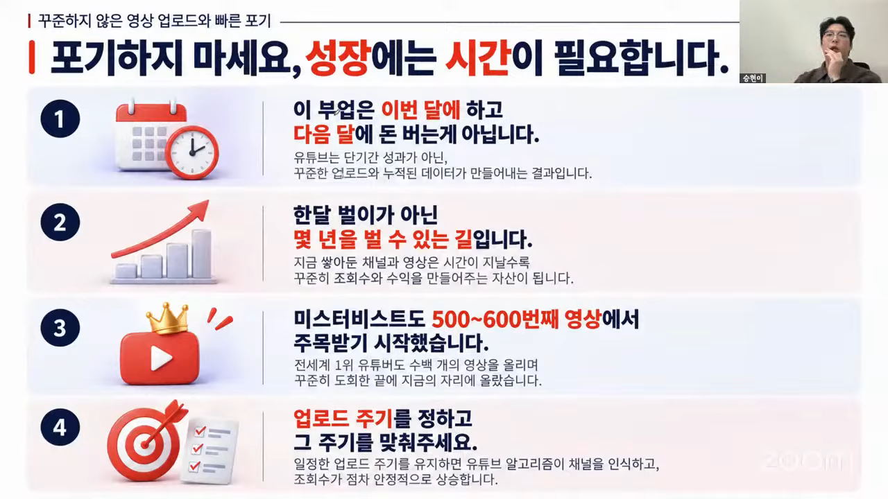
시연: ChatGPT와 Suno로 곡 만들기
여기서부터는 실제로 곡을 만드는 시연이에요. 강사는 곡을 만들 때 고민을 많이 하지 않는다며 ChatGPT와 Suno 두 개만 써요. 그날 만들고 싶은 장르를 정하고, ChatGPT에 이렇게 한 줄로 부탁해요.
가을에 듣기 좋은 기분 좋은 여자 알앤비 하나 깔끔하게 만들어보자 가사 제목 영어는 프롬프트로 야무지게 해줘
— 영상 01:26:24 (화면에 입력한 문장)
화면 위쪽의 영어 문단이 ChatGPT가 돌려준 'Suno Production Prompt'예요. 'Modern female-vocal pop R&B', '97 BPM', 'warm Rhodes piano'처럼 장르, 빠르기, 악기, 보컬 느낌을 길게 적고, 끝에는 'No EDM drops'처럼 넣지 말 것까지 적어요. 강사는 이렇게 자세한 이유가 그동안 만든 곡들의 내용을 이 대화방에 학습시켜 둬서라고 해요.
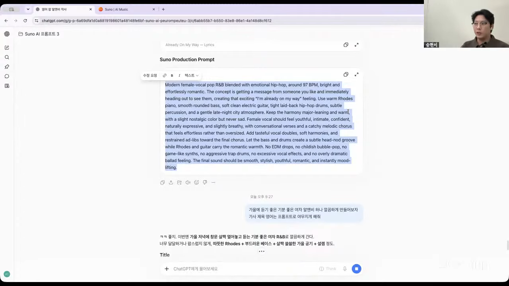
Suno에 넣고 여러 곡 뽑기
ChatGPT가 준 가사와 프롬프트를 Suno의 Create 화면에 붙여 넣어요. 강사는 가사 맨 앞의 인트로 부분은 지워요. 인트로를 넣으면 Suno가 허밍을 넣는데 그 허밍을 좋아하지 않아서예요. 왼쪽 Styles 칸 아래 '942/1000'이 보이는데, 프롬프트가 1,000자를 넘으면 끝을 살짝 잘라 맞춰요. 보컬 성별은 Female로 두고 Create를 눌러요.
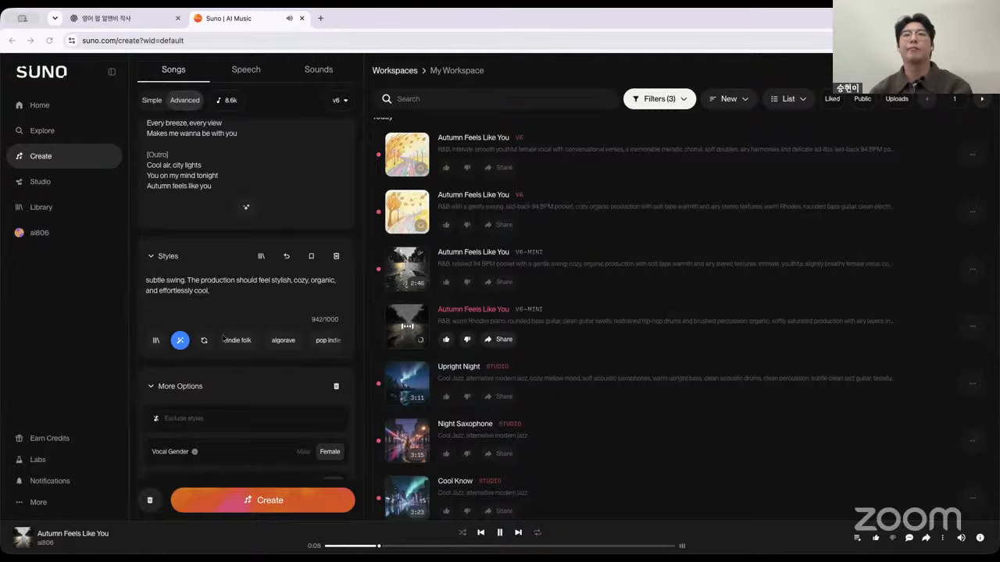
한 번에 여러 버전이 나오면 들어 보고 고르면 돼요. 강사는 시청자 투표로 3번을 골랐어요. 고르는 기준을 묻자 "다음 부분이 궁금하지 않으면 다시 뽑는다"고 답해요. 듣다가 처지는 곡은 버리고, 좋은 구간이 있으면 그걸로 가요.
Studio로 열어 내려받기
내려받는 방법도 보여 줘요. 곡 오른쪽 점 세 개 → Edit → Open in Studio로 들어가면 화면처럼 Single Track과 Multi Track 중 하나를 고르는 창이 떠요. 멀티트랙은 악기마다 따로 나오니 보통은 Single Track을 고르고, Export → Full Song → Go to Song 순서로 가요. 앞 섹션에서 본 Suno의 다운로드 제한을 Studio 기능으로 피하는 경로예요.
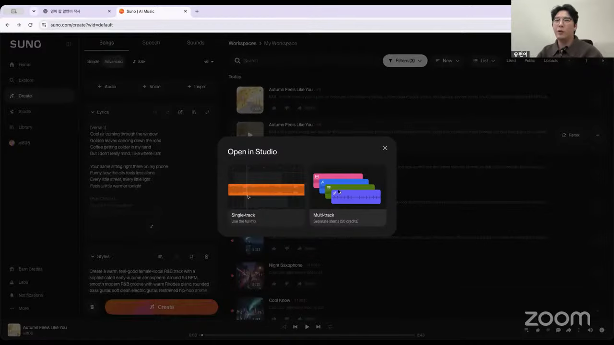
파일 형식은 WAV(Waveform Audio File Format)로 받아요. 화면의 Download 창에는 M4A(MPEG-4 Audio), MP3(MPEG-1 Audio Layer III), WAV, MP4(MPEG-4 Part 14) video asset, Stems & MIDI(Musical Instrument Digital Interface)가 있어요. 강사는 MP3와 WAV의 차이를 영상 화질에 비유해서 MP3가 2K라면 WAV는 4K라고 설명해요.
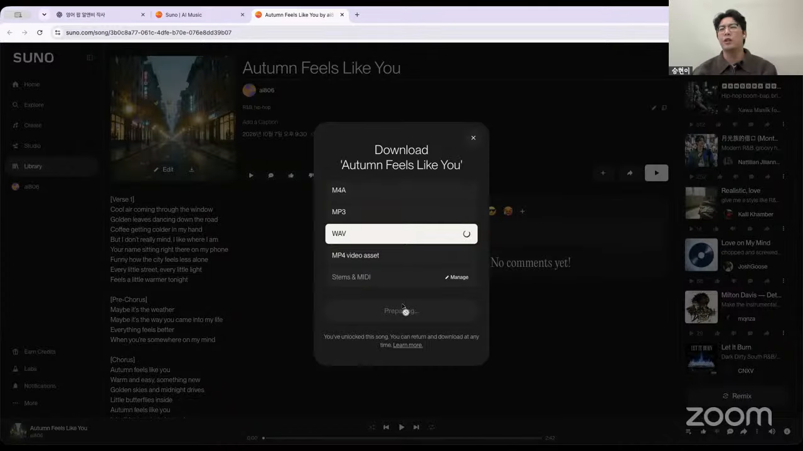
허밍만 지우는 법
곡은 좋은데 허밍이 거슬릴 때 쓰는 요령도 알려 줘요. 이번에는 Open in Studio에서 Multi Track을 골라요. 그러면 화면처럼 Percussion, Keyboard, Guitar, Bass, Drums, Backing Vocals, Vocals가 각각 한 줄씩 열려요. 맨 아래 Vocals 줄에서 허밍 부분을 확대해 잘라 내고, 다시 Export → Full Song으로 내보내면 돼요. 단점은 멀티트랙을 여는 데 시간이 오래 걸린다는 거예요.
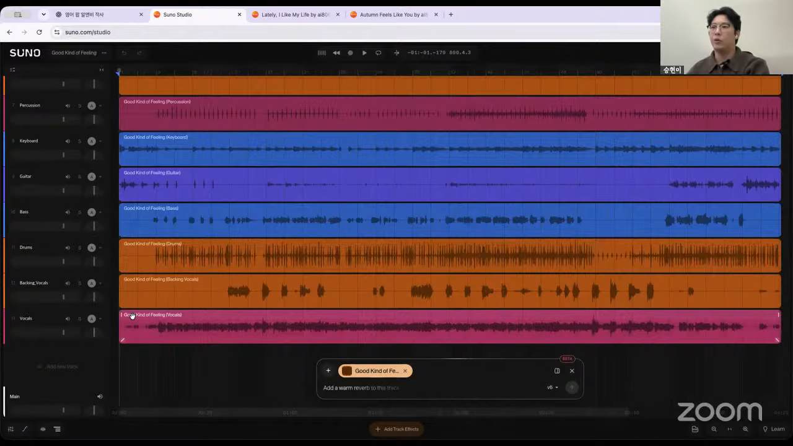
프롬프트에 특정 가수 이름을 넣어 "누구처럼 해 줘"라고 하면 Suno가 만들어 주지 않는다고도 덧붙여요.
그다음은 마스터링
곡을 만들었으면 다음은 마스터링이에요. 강사는 마스터링을 결국 볼륨을 키우는 작업이라고 설명해요. 그냥 키우면 소리가 찢어지니, 안 찢어지게 키울 수 있느냐가 관건이에요. 시연에서는 마스터링 전후를 이어 틀어 소리 크기가 달라지는 걸 들려줘요. 왜 볼륨이 중요한지는 마지막 섹션의 Q&A에서 비유로 다시 설명해요.
시연: Ditto Music으로 유통하기
마스터링한 곡을 유통사 Ditto Music에 올리는 과정이에요. 강사는 DistroKid보다 간단하다며 화면을 그대로 보여 줘요. Ditto는 다섯 단계로 나뉘어 있어요. 화면 위쪽의 1 Upload, 2 Details, 3 Schedule, 4 Stores, 5 Review예요.
1. 곡 올리기
새 릴리스를 만들고 앨범 제목을 정한 뒤 WAV 파일을 올려요. 화면에서는 세 곡이 차례로 올라가고 있어요. 안내 문구는 16비트, 44.1kHz 스테레오 WAV나 MP3, FLAC(Free Lossless Audio Codec)를 권해요. 그다음 화면에서 앨범 재킷을 넣는데, 강사는 GPT(Generative Pre-trained Transformer)로 뚝딱 만든 이미지를 썼다고 해요.
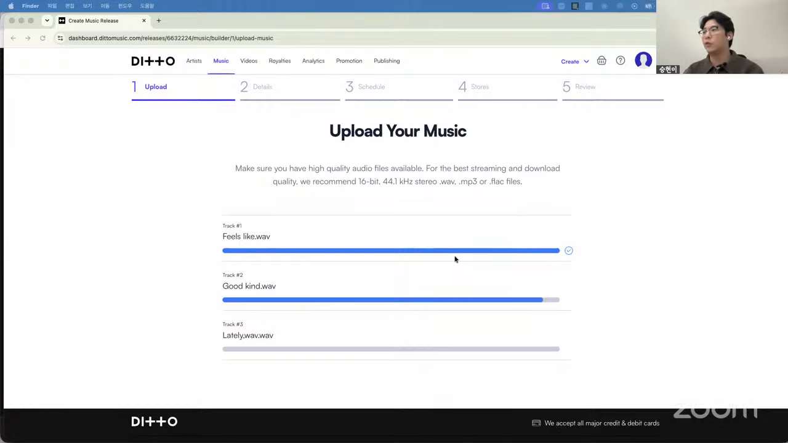
2. 메타데이터 넣기
Details 단계가 앞에서 말한 메타데이터를 넣는 곳이에요. 저작권자, 장르(팝, R&B), 아티스트를 고르고, 아래 Track Credits에 작곡가(Composer), 작사가(Songwriter), 프로듀서(Producer/Engineer), 연주자(Performer)를 적어요. 강사는 모두 본명을 넣어요. 'Duplicate on all tracks'를 켜고 저장하면 다른 곡에도 똑같이 들어가요. 화면 위쪽에는 ISRC(International Standard Recording Code)를 자동 생성했다는 문구가 보여요. 아티스트 이름은 활동명이어도 되지만, 저작권자 칸은 '밍밍 리'처럼 사람 이름 형식이어야 한다고 해요.
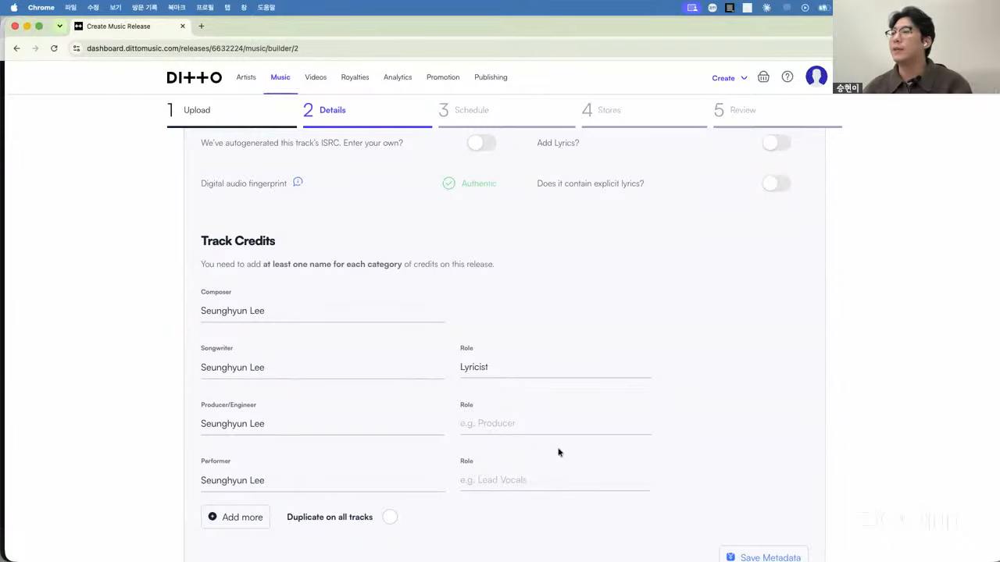
3. 출시일과 유료 옵션
Schedule 단계에서는 출시일을 골라요. 화면 왼쪽 보라색 '우선 배포'는 3일 미만에 내보내 주는 대신 40달러가 붙고, 오른쪽 '표준 배포'는 10일 이상 걸리지만 기본에 포함돼 있어요. 강사는 돈 아깝다며 10일 뒤인 10월 18일로 잡아요.
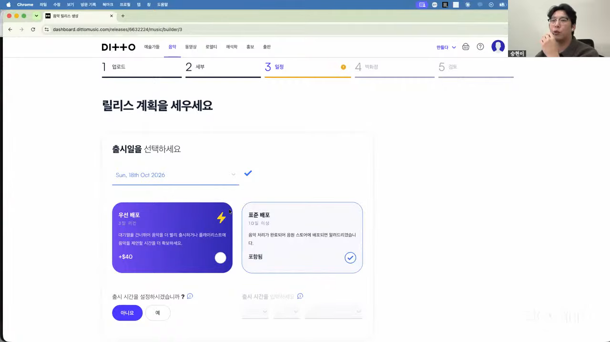
아래로 내리면 차트 등록이나 사전 다운로드 같은 유료 옵션이 줄줄이 나와요. 강사는 다른 건 다 빼고 맨 아래 '릴리스 보호 기능'만 체크하라고 해요. 화면 설명대로 계정을 해지하거나 구독료를 못 내도 곡을 매장에서 내리지 않고 저작권료도 계속 지급한다는 약속이에요. 평생 유통사 구독료를 낼 수는 없으니 이게 중요하다고 해요.
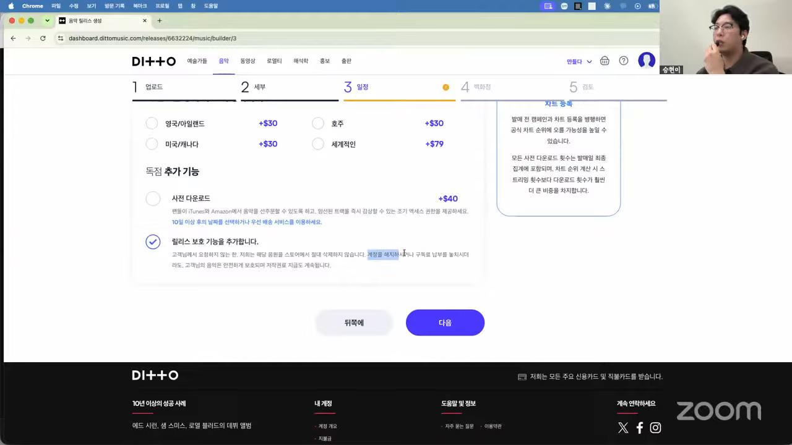
4. 매장 고르기와 마무리
Stores 단계에서는 'Select All Stores'로 전부 선택해요. 화면에 스포티파이, 아이튠즈, 애플 뮤직, 아마존, 디저, 타이달, 틱톡, 유튜브 뮤직, 코부즈 같은 매장이 줄지어 있어요. 아래쪽에는 한국의 플로도 있다고 해요. Ditto 한 곳에 올리면 Ditto가 이 매장들로 알아서 보내 줘요. 마지막 Review에서 메타데이터를 확인하고 주문을 마치면 제작과 유통이 끝나요. 비용은 0원이었어요.
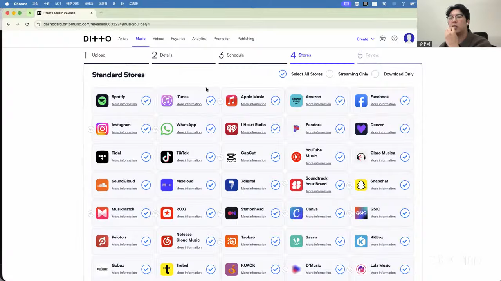
강사는 Ditto에서는 지금 AI 음원을 콘텐츠 ID로 등록할 수 없고, 콘텐츠 ID는 원래 AI 음악에 주는 제도가 아니니 굳이 신청하지 않아도 된다고 해요. 정리하면 ChatGPT → Suno → 마스터링 → 유통, 네 단계가 끝이에요. 다만 강사는 강의를 끝까지 듣고 시작하라고 덧붙여요.
혼자 할 때의 목표치와 Q&A 팁
시연을 마친 강사는 혼자 시작한다면 몇 곡을 내고 어느 정도를 기대하면 되는지 '초심자 성장 시뮬레이션'을 보여 줘요. 슬라이드 다섯 장에 걸쳐 1개월, 2개월, 3개월, 6개월, 12개월 차 목표가 나와요. 아래 그림은 다섯 장의 숫자를 한 축에 모은 거예요.
1개월 차는 매주 10곡씩 40곡을 내고, 곡당 평균 50~200회 재생으로 2,000~8,000회를 목표로 해요. 예상 수익은 2만~8만 원이에요. 강사는 이 시기를 수익보다 '데이터'를 모으는 기간이라고 해요. 어떤 곡에 사람들이 반응하는지 보고 다음 달 전략에 반영하라는 거예요. 2개월 차 100곡, 3개월 차 180곡으로 늘리며 반응 좋은 곡의 패턴을 찾고, 6개월 차 360곡이면 60만~160만 원이 된다고 해요. 작은 수익이라도 반드시 들어온다는 게 다른 부업과 다른 점이라고 강조해요.
12개월 차 슬라이드는 두 갈래로 나뉘어요. 왼쪽은 매달 60곡씩 계속 내며 자산을 쌓는 사람으로 720곡, 월 300만~500만 원이에요. 오른쪽은 720곡을 유지하며 관리만 하는 사람으로 월 100만~200만 원이에요. 음원 수익은 첫 정산까지 3개월쯤 걸리고, 유튜브는 수익 창출이 되면 바로 들어온다고 해요.
Q&A에서 나온 실전 팁
강의 뒤 두 시간 가까운 질의응답에서 나온 답 가운데 실제로 해 볼 때 쓸모 있는 것만 모았어요. 먼저 시작 비용이에요.
| 항목 | 강사가 말한 비용 | 메모 |
|---|---|---|
| Suno | 월 약 4.5만 원 | 환율 때문에 4.9만 원쯤 나올 수도 있다고 해요 |
| Ditto Music | 연 약 8만 원 | 1년에 한 번 내요. 수익은 카카오뱅크 같은 국내 계좌로 받을 수 있어요 |
| 유튜브 뮤직 | 월 약 1.1만 원 | 구독해야 앱 메인 화면에서 넘어갈 수 있어 플리 작업에 필요하다고 해요 |
컴퓨터는 좋은 사양이 필요 없고, 10년 된 컴퓨터로 하는 사람도 있다고 해요. 맥이든 윈도우든 상관없어요.
마스터링은 왜 꼭 해야 할까요
Suno의 리마스터 기능을 써도 볼륨 값은 그대로라 따로 키워 줘야 한다고 해요. 강사는 이걸 키에 비유해요. 친구들은 모두 190cm인데 나만 160cm인 상황이 마스터링 안 한 내 곡이라는 거예요. 눈에 띄는 게 아니라 아무도 거들떠보지 않아요. 플리에서 볼륨 10짜리 곡을 듣다가 갑자기 3짜리가 나오면 사람들은 "이거 뭐야" 하고 꺼 버려요.
발매와 업로드 주기
- 음원 발매: 같은 아티스트라면 적어도 3~4일에 한 장이에요. 이틀에 한 장도 안 돼요. 다른 아티스트라면 같은 날 내도 괜찮아요. 일주일에 앨범 한두 장이 가장 좋다고 해요.
- 유튜브 플리 업로드: 강사는 3일 간격이 가장 좋다고 해요. 초기 채널이 매일 올리면 유튜브가 어느 영상에 알고리즘을 줘야 할지 몰라서 오히려 독이 된다고 해요. 구독자가 생긴 뒤라면 자주 올려도 괜찮아요. 요일은 주말이든 평일이든 상관없다고 봐요.
- 플리 채널의 수익 창출 조건: 플리는 영상이 길고 반복해서 듣기 때문에 대부분 영상 하나가 터지면 시청 시간 조건이 한 번에 채워진다고 해요. 브이로그처럼 200시간, 400시간씩 모아 가지 않아도 된다는 거예요.
- 양산형 채널: 신고를 당하지는 않지만, 수익 창출을 신청하면 거절될 수 있어요. 찍히기 전까지는 본인도 모른다고 해요.
콘텐츠 ID는 무조건 좋을까요
콘텐츠 ID는 유튜브 어디서든 내 곡이 1초라도 나오면 그 영상의 수익을 저작권자에게 가져오는 장치예요. 브이로그에서 거리 음악이 나오면 '저작권 걸린다'고 하는 게 이것 때문이에요. 강사는 이게 유명 가수에게나 좋은 제도라고 봐요. 내 수익 창출 채널에서 내 곡을 쓴 쇼츠가 1,000만 회 터지면 어떻게 되는지 흐름으로 설명해요.
flowchart LR A["내 채널 쇼츠에
내 곡을 씀"] --> B["쇼츠 조회수가 터짐"] B --> C["콘텐츠 ID가
소유권을 주장"] C --> D["조회수 수익 대신
음원 수익으로 넘어감"] D --> E["정산까지 몇 달 대기"] E --> F["중간에 콘텐츠 ID가
탈락하면 못 받음"]
저작권과 수익을 둘러싼 질문들
- 남의 명의로 받기: 사정상 내 명의로 부수입을 받기 어렵다면 유통사의 로열티 스플릿 기능으로 저작인접권 수익을 다른 사람에게 나눠 줄 수 있어요. 나중에 내 앞으로 되돌리는 것도 된다고 해요.
- 기존 곡을 AI로 리믹스하기: 만들 수는 있지만 원곡의 저작권자가 따로 있어서 수익 창출은 안 돼요. 강사는 기존 곡을 트로트풍으로 바꿔 올리던 채널이 수익 창출을 신청했다가 영상이 모두 지워진 사례를 들어요.
- 키즈 채널은 비추천: 키즈 채널로 분류되면 광고 단가가 크게 낮아져요. 아이가 원곡 아기상어를 틀어 달라고 하면 부모는 그걸 틀 수밖에 없어서, AI 곡으로는 이길 수 없다고 해요.
- '광고 없음' 문구: 광고가 붙는다고 사람들이 안 듣는 게 아니라, 기대하고 들어온 내용과 다를 때 나가요. '광고 없음'은 한 번이라도 더 눌러 달라는 장치일 뿐이고, 수익 창출 채널은 업로드할 때 광고를 달지 말지 고를 수 있어요. 강사는 광고가 붙으면 다 단다고 해요.
단기간에 1천만 원 한 번 버는 거보다 300만 원씩 3년 벌어가는게 맞다라고 생각합니다.
— 영상 02:43:10
강사가 Q&A에서 거듭한 말은 이 한 문장이에요. 영상 세 개로 수익 창출을 만드는 방법은 있지만 그 뒤에 계정이 정지될 수 있고, 그래서 안전한 방법으로 오래 버는 쪽을 택한다는 거예요.